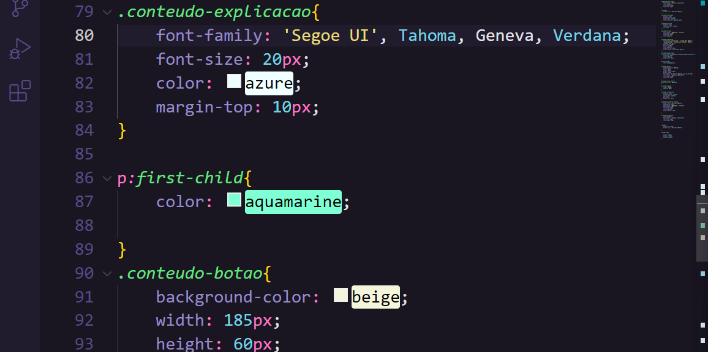

Pseudo-Classes
A pseudo-classe first-child permite alterar o primeiro elemento filho de um elemento pai.
Neste exemplo temos dois parágrafos dentro de uma div que estou aplicando uma pseudo-classe para colorir a fonte no CSS. Dessa forma o código fique mais limpo, e com um número menor de classes criadas.
Como mencionado, as alterações de cores permanecem apénas no primeiro elemento entre todos os elementos que uma div pode ter.


Mais utilizadas:
1. First-child permite alterar o primeiro elemento filho de um elemento pai
2. Last-child permite alterar o ultimo elemento filho de um elemento pai
3. Not permite negar uma alteração em um elemento filho adicionando uma classe